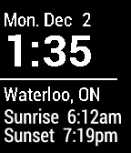

What is Pebble Cards?
Pebble Cards is a watch app for your Pebble watch that displays a set of user-customizable information cards. Add cards that contain the information you care about, such as headlines from your favourite RSS feed, your next Google calendar appointment, local weather, stocks, a world clock, and even a simple note. Customize your cards from within the Pebble App on your smartphone. Pebble Cards is available for iOS and Android.
Card Types

Calendar
See your upcoming Google Calendar events.
RSS
Read the latest headline from any RSS feed.
Stock
Get the latest stock price and change from Yahoo!
World Clock
Show the time of any time zone with a location label.
Weather
Check the current weather conditions from Yahoo!

Sunrise Sunset
Check sunrise and sunset times from Yahoo!
Note
Remind yourself about an arbitrary piece of information.
Battery
Check the battery charge of your Pebble watch.
Sports Team
Get scores and game times from NBC Sports.
Transit
See departure times for the stops you use from NextBus.
Driving Time
Check traffic conditions from MapQuest.
Custom
Display custom content from your own JSON source. More infoHelp
Controls
Up/Down Buttons - Cycle through all the cards.
Middle Button (click) - Refresh the current card.
Middle Button (hold) - See more details.
Configuration
Pebble Cards can be configured within the official Pebble mobile app. Scroll to Pebble Cards app (once it's installed on you Pebble) and tap the "Settings" button under the screenshot.
Day/Night/Auto Display - Day mode sets the watch display to black-on-white and Night mode sets it to white-on-black. Auto switches between Day and Night modes at 6:00 and 18:00.
Vibrate on Hour - Vibrate the watch on the hour (Only works when Pebble Cards is running).
Vibrate on Disconnect - Vibrate when the Bluetooth connection between the watch and phone is lost.
Card Information
Most cards will automatically refresh on the hour, except for:
Transit - every 1 minute
World Clock - every 1 minute
Battery - every 5 minutes
Custom - defaults to every 60 minutes - can be overriden by developers
Calendar Card
Why are my events not showing?
Pebble Cards is able to access calendar events from Google Calendar only; make sure you are logged in to Google through the button at the bottom of the Settings Screen. Also, Pebble Cards will only show the most events from today and tomorrow; events that start after tomorrow will not be displayed.
Why can't Pebble Cards access events on my phone's calendar instead?
Pebble Cards is built to support both iOS and Android. That means it cannot rely on any platform-specific technologies, such as accessing data from native phone apps (e.g. Calendar, Contacts, Notes, Reminders, Phone, Messages, etc.).
Weather Card
What do I enter in the Location field?
The Weather card gets data from Yahoo, and the Location field is search query for the location. Pebble Cards will use the first location returned in the search. To see what queries will result in the right location, visit woeid.rosselliot.co.nz to test a few queries. In most cases, exclude punctuation marks, such as commas (e.g. "London ON", "Chelmsford UK").
Sports Team Card
What do I enter in the Team Alias field?
Team Alias is the abbreviated form of the sports team. To find the correct team alias, visit wscores.nbcsports.msnbc.com/ticker/ticker.html and find your team.
Note: If your team does not appear in the ticker, then please wait until your team has an upcoming game and try again.
Driving Time Card
What is the API Key field?
The Driving Time card uses MapQuest API to calculate the route. The default API key that Pebble Cards uses (when the field is blank or set to the string "Optional") has a limited number of API calls per day. In the event that Pebble Cards exceeds this limit, you can use your own API key instead.
Transit Card
What transit agencies are supported?
The Transit card uses live GPS data from NextBus. The list of supported agencies can be found in this XML document. Note that not all transit agencies have enabled the ability to access data from the NextBus API.
Custom Card API
The custom card displays content from a JSON response from any URL.
Request
You can pass in query parameters in the URL to customize the response. Pebble Cards (v2.1 and later) can optionally do a POST request with location data. When configured (through Pebble Cards settings), the following fields will be included in the POST request:
latitude
longitude
altitude (can be null)
accuracy
altitudeAccuracy (can be null)
heading (can be null)
speed (can be null)
For more information about these fields, see https://developer.mozilla.org/en-US/docs/Web/API/Coordinates.
Response
The default url (https://keanulee.com/pebblecards/custom_sample.php?name=John&vibrate=1) responds with:
{
"content" : "Hello John,\nWelcome to Pebble Cards!",
"refresh_frequency" : 30, // Optional
"vibrate" : 1 // Optional
}content - The content to display (required).
refresh_frequency - The auto-refresh interval in minutes (defaults to 60 minutes if 0 or not specified).
vibrate - Used to vibrate the Pebble on refresh. Can be one of the following values:
0 - Don't vibrate.
1 - Short vibration.
2 - Double vibration.
3 - Long vibration.
All other fields are ignored.
Donate
If you like Pebble Cards and would like to show your support, please consider making a donation.
Donate Now »